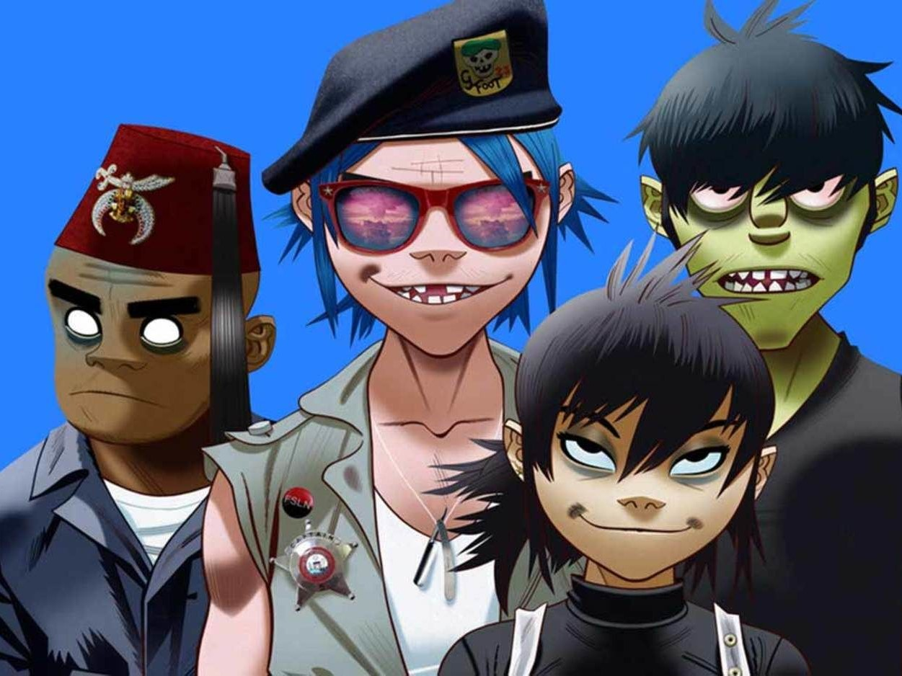
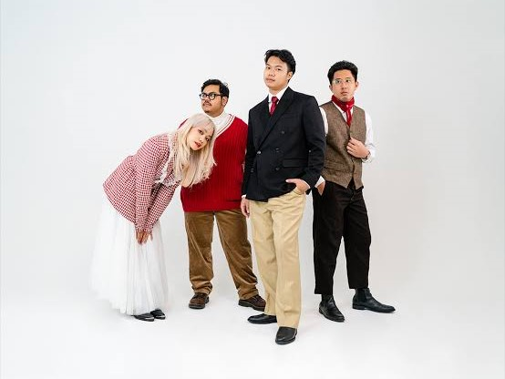

Gorillaz
Grup musik ini beranggotakan 4 karakter virtual yaitu: 2-D (Stuart Tusspot): penyanyi. Pria beraksen cockney, berambut biru(asli) dan kehilangan dua gigi depannya, Murdoc Nicalls: pria pelopor Gorillaz dan pemain bass.
Go somewhere.jpg)
The Neighbourhood
grup musik indie rock yang dibentuk di Newbury Park, California pada tahun 2011. Grup musik ini terdiri dari vokalis Jesse Rutherford, gitaris Jeremy Freedman dan Zach Abels, basis Mikey Margott, dan drummer Brandon Alexander Fried.
Go somewhere

Reality Club
Awalnya, grup musik ini terbentuk oleh Fathia Izzati, Era Patigo dan Mayo Falmonti pada 2016. Namun kemudian, Fathia mengajak kakaknya, Faiz Novascotia Saripudin dan Iqbal Anggakusumah untuk bergabung.
Go somewhere